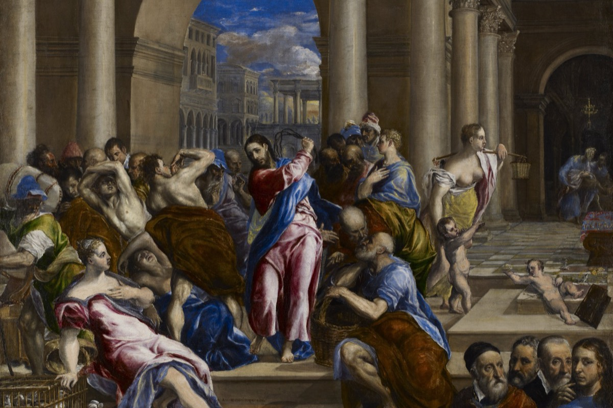

The cash register, not the cage
In 2015 a pastor asked his followers to buy him a sixty-five million dollar private jet. He had done the math. Two hundred thousand of them, three hundred dollars or more apiece.
The pastor was Creflo Dollar, the jet a Gulfstream G650, and the campaign was called Project G650. When the internet noticed, the ask was pulled within days. It came back. The church board explained that the jet was "a necessity" for spreading the gospel, the old plane having taken "substantial airframe damage," and Dollar told his congregation that the criticism was the work of the devil, who was "trying to discredit me." CNN, 2015
A year earlier, the televangelist Kenneth Copeland had explained on camera why men like him fly private. You cannot, he said, get "in a long tube with a bunch of demons," which is what a commercial flight is. Copeland owns several jets and is worth somewhere north of three hundred million dollars. He is often called the richest pastor in America. CBS News, 2019
These men are easy to laugh at, and that is the problem, because the laugh lets you off the hook. The jets sit at the end of a road that starts somewhere completely respectable: a teacher, a hall, a thing worth knowing, and a fee to keep the lights on. Nobody sets out to build a religion that sells private jets. They get there one reasonable-seeming step at a time, and the steps are the same in a megachurch, a meditation course, a self-help weekend, and your cousin's essential-oils business.
This is a post about that road. A separate failure, the cult that closes around you and will not let you out, is its own story. This is the other one, the one that does not need a compound or a guru with a gun, just a price list. How a path to meaning turns into a business, and where the teaching ends and the selling begins.
First, be fair to the sellers
The honest part is that charging money is not the sin. Every spiritual teacher who ever lived had to eat. The Buddha's monks begged for their food, which is still a transaction. Churches pass a plate. Monasteries owned land and sold beer. A yoga teacher rents a room, a meditation app pays its engineers, and a book costs money to print. Name a price for a class and you have done nothing wrong, and the people who sneer that any spiritual fee is a scam have not thought about who pays for the chairs.
So the question is sharper than "money bad." Go back to the painting. The temple in Jerusalem was supposed to have a market in it. You came to sacrifice a dove, and someone had to sell you the dove. You came with Roman coins stamped with a god-emperor's face, and someone had to change them for temple money. That trade was the system working. When Jesus flipped the tables, he was not objecting to money existing near the sacred. He was objecting to something more specific, the moment the trade stopped serving the temple and the temple started serving the trade. John 2:13-16
That is the line this whole post is trying to find. Not "is there money here," because there is always money. The question is whether the tables have taken over. Here are five places to look for the answer, sorted roughly from the gentlest to the most lucrative. Read them as case studies, not verdicts. Millions of people have gotten something real out of every one of these, which is exactly why the line is hard to draw.
The weekend that breaks you down
You pay about seven hundred dollars, show up on a Friday, and by Saturday afternoon a man with a microphone is telling a room of strangers that your life does not work and that you are, in so many words, an asshole.
This is the Landmark Forum, and people pay for it on purpose. The format is three long days and an evening, in a hotel ballroom, the breaks short and the sessions running late into the night. The trainer is confrontational by design. He tells you that your story about your life, the one where your problems are everyone else's fault, is a racket you run, and he keeps pushing until something gives. People cry. People call their estranged fathers from the lobby. Somewhere in the exhaustion comes the thing they sell, the "breakthrough," the moment you stop blaming and decide you are the author of your own life.
Stripped of the jargon, that idea is just Stoicism with a clipboard, and it is genuinely useful. The trouble is never the idea. It is the architecture around it.
The man who built the architecture was a used-car salesman named Jack Rosenberg. In 1960 he left his wife and four children in Philadelphia, moved west, and reinvented himself, picking a new name out of a magazine article that mentioned the German economics minister Ludwig Erhard and the physicist Werner Heisenberg. As Werner Erhard he soaked up Dale Carnegie, Zen, and a stint inside Scientology, blended them, and in 1971 started selling the mix as est, Erhard Seminars Training. Erhard bio The biographer Steven Pressman laid out the rest in a book whose title says it plainly, Outrageous Betrayal.
What turns Landmark from an intense weekend into a case study is what happens when the weekend ends. The Forum is the bottom rung. Finish it and you are encouraged into the Advanced Course, then the Self-Expression and Leadership Program, a ladder of further paid courses. You are also pressed, hard, to bring your friends and family to a free introductory evening, where the same pitch runs again. And you are invited to come back and "assist," to work the registration table and the microphones and the cleanup, for free. A company that books millions of dollars in tuition runs substantial parts of its operation on the unpaid labor of graduates who believe they are working on themselves.
Erhard himself left the country in 1991, after a hostile 60 Minutes segment, tax fights with the IRS, and family abuse allegations that were later partly recanted. He sold the "technology" to his employees, who repackaged it as Landmark Education, now Landmark Worldwide, run for years by his brother. The company says more than 2.4 million people have done its programs. Landmark Worldwide
It is voluntary, it is legal, and a lot of people swear it genuinely changed their lives. The core teaching, that you are responsible for how you hold what happens to you, is sound and old. Landmark is not a cult in any legal sense, and it has gone to court against people who called it one.
The product is never finished. There is always a next course, a next level, a next person to recruit, and an invitation to keep working for free. A good class ends and sends you home. This one is built so that the end of every course is the start of selling you, or your friends, the next one.
The book Jesus could not copyright
A Course in Miracles is twelve hundred pages long, and the woman whose name is on it always said she did not write it. She took dictation. The voice, she said, was Jesus.
Helen Schucman was not a mystic. She was a research psychologist at Columbia, tenured, skeptical, an atheist by her own account, and allergic to exactly this sort of thing. In 1965 she and her department colleague William Thetford were so sick of their constant office feuding that Thetford said, out loud, "there must be another way." She agreed to help him find it. That, she later wrote, set off months of strange dreams and waking visions, and then a clear inner voice. Schucman bio
On a night that October the voice said, "This is a course in miracles. Please take notes." She took notes. For the next seven years she filled shorthand notebooks with inner dictation she described in flat, almost clinical terms, no trance, no automatic writing, just a steady voice she could pause and pick up again, and Thetford typed it all up. FIP on the scribing The result was published in 1976: a Text, a Workbook of 365 daily lessons, and a Manual for Teachers, teaching that the world is an illusion and forgiveness is the only thing that is real.
Schucman, by every account, made almost nothing from it and was uneasy about the whole business until she died. The money came later, and it came through other people.
In 1992 a teacher named Marianne Williamson published A Return to Love, her gloss on the Course, and Oprah Winfrey held it up on television. Winfrey said she had never been more moved by a book, bought a thousand copies, and told her audience she had experienced 157 miracles after reading it. It became the fifth best-selling book in America that year and spent 39 weeks on the New York Times list. A Return to Love Williamson became Oprah's "spiritual advisor," and later ran for president. Around the Course grew the usual economy: study groups, retreats, workshops, teacher trainings, and a stack of spin-off books.
Then came the part that belongs in a law-school textbook. The foundation that published the Course held a copyright on it, and in the 1990s it sued a rival group for reprinting the text. The case forced a federal court to rule on a genuinely strange question: can you own the copyright to a book dictated by Jesus? In 2003 the judge said no, though not for the theological reason. He found that the Course had been photocopied and handed around freely for years before it was ever formally published, to "friends and congenial strangers," which under copyright law had already put it into the public domain. Penguin Books USA v. New Christian Church of Full Endeavor (2003) A thing given by a divine voice, for nothing, had spent thirty years with a copyright lawyer, and a court had to set it loose.
Schucman never cashed in and never wanted to. The Course was given away in its early years, and millions of people have found in it a real practice, the slow work of forgiveness, that has steadied their lives. None of that is fake, and none of it is her doing.
This is the gentlest case here, and worth keeping that way. The book itself is a fixed thing with a one-time price. The pressure landed on the edges, in the brand-building and the lawsuit, where a free gift from the divine grew lawyers and a licensing fight, until a judge had to remind everyone that nobody owns it.
Name it and claim it
The prosperity gospel teaches that God wants you rich, that faith is a force, and that the way you turn the force on is to give money to the ministry. The donation is not a side effect of the belief. The donation is the belief.
This is the loudest case, because here the cash register is built into the theology, not bolted on the side. The doctrine, sometimes called Word of Faith or "name it and claim it," holds that your words shape reality, that sickness and poverty are signs of weak faith, and that a believer can speak wealth and health into being. The historian Kate Bowler, who studied the movement up close, traces it from old American positive-thinking through preachers like Kenneth Hagin and Oral Roberts. Bowler, Blessed (2013)
Roberts supplied the engine, an idea he called "seed faith." Giving money to God, he taught, is not a debt you owe but a seed you sow, and a seed multiplies. You give to get. The genius and the danger are the same: once giving is the sacrament, the offering plate is no longer paying for the building, it is the act of worship itself, and there is no natural ceiling on worship.
In 1987 Roberts showed where that logic ends. He went up into the prayer tower at his university and announced that God had told him to raise eight million dollars by the end of March, and that if the money did not come in, God would "call me home." He was, in plain terms, telling his followers that their donations were the only thing keeping him alive. The money came, including a million and a half from the owner of a Florida dog track, and Roberts walked back down. Washington Post, 1987
The modern version flies private. Kenneth Copeland's "long tube of demons" and Creflo Dollar's sixty-five million dollar jet are not the excesses of the prosperity gospel, they are its proof of concept: the preacher's wealth is the advertisement. If God really blesses the faithful with money, the man with the Gulfstream must be the most faithful of all. In 2007 a US senator, Chuck Grassley, opened an investigation into six prosperity ministries, including Copeland's and Dollar's, looking at the jets and the mansions and the church boards stacked with relatives. After three years it ended with no penalties and no findings, an object lesson in how little anyone can touch a church's books. Senate inquiry, 2007 to 2011
And yet the cruelest thing you can say about the prosperity gospel is also the most sympathetic, and Bowler is the one who earned the right to say it. She spent years arguing that it is not simply a con. It offers hope and dignity and agency to people the respectable churches and the regular economy had written off, a God who cares about your rent and your tumor, not just your soul. Then, at 35, healthy, she was diagnosed with stage IV colon cancer, and the gospel she had studied had no place at all for what was happening to her. She wrote a book about that too. Its title is Everything Happens for a Reason, and Other Lies I've Loved.
What Oral Roberts said God required, or "God will call me home," 1987
The Gulfstream G650 Creflo Dollar asked his followers to fund, 2015
Kenneth Copeland's estimated net worth, often called America's richest pastor
The religion of the side hustle
You probably know someone who sells leggings, or supplements, or essential oils, and whose pitch sounds less like a sale than a testimony. That is not your imagination. It is the design.
Multi-level marketing borrows the whole machinery of a church. There is the conversion story, my life before the oils and after. There is the witnessing, except witnessing is called recruiting. There is the charismatic founder, the annual convention that runs like a revival meeting, and the promise that if you just believe and keep at it, abundance is coming. Researchers who study it keep landing on the same overlap: the people most drawn into the top MLMs are disproportionately churchgoing women, evangelical and Mormon, and the language of faith does a lot of the selling. Utah, the most heavily Mormon state, is the multi-level marketing capital of the country. Religion News Service Amway, the original, was built by Christian-right royalty and ran its rallies with the fervor of a tent meeting.
Then there is the number that ends the romance. Across the industry, study after study finds that the overwhelming majority of sellers lose money. A 2024 Federal Trade Commission review of seventy companies' own income disclosures found that most participants made a thousand dollars a year or less, and at many of them, most made nothing at all. Independent analyses put the loss rate around 99 percent. About 95 percent quit within ten years. FTC staff report, 2024 The structure pays the people at the top out of the recruitment of the people below them, which means it needs a permanent, renewing supply of hopeful newcomers who will mostly lose.
The same engine runs the wellness aisle, where spirituality is sold as a product you apply or swallow. Gwyneth Paltrow's Goop is the high end of it. In 2018 the company paid a 145,000 dollar settlement to California prosecutors over its jade and rose-quartz "yoni eggs," sold with claims that they could balance hormones and prevent uterine prolapse, claims with no scientific basis. NPR, 2018
And the purest distillation is a book. The Secret, Rhonda Byrne's 2006 phenomenon, teaches the "law of attraction," the claim that your thoughts emit a frequency that pulls matching circumstances toward you. Think wealth and wealth arrives. It is the prosperity gospel with God quietly removed, the same promise sold to people who would never set foot in Copeland's church. Oprah blessed this one too, and it has sold around 30 million copies. The Secret
The community is real. For a lot of isolated people, especially women shut out of conventional careers, the friendship and the sense of purpose are not fake, and some of the wellness practices underneath have genuine value. Most sellers are not predators. They are believers who were sold the same dream they are now selling.
Your reward depends on other people losing. In an MLM, you make money when the people you recruit spend money, which means the math only works if there is always a fresh layer of hopeful newcomers below you who mostly will not. A faith that needs a pyramid of losers under you is selling something other than faith.
The mantra with a price tag
Transcendental Meditation is a simple, real thing. You sit twice a day with your eyes closed and silently repeat a word. Learning which word costs about 980 dollars.
The technique works for a lot of people, which is what makes it the subtlest case in this post. TM came west with the Maharishi Mahesh Yogi, who put it on the map by reeling in the Beatles. The band followed him to Rishikesh in 1968, then walked out disillusioned within weeks, with John Lennon writing a sour song about him on the way home. The Beatles in India What the Maharishi built around the technique is the case study.
You cannot simply be told how to do TM. You have to pay for a standardized course and receive your mantra in a private ceremony, complete with offerings to the Maharishi's late teacher. The mantra is presented as personal, chosen for you. Former teachers who broke with the movement revealed that the "personal" mantras are actually pulled from a short list keyed to your age, the same handful of Sanskrit syllables handed out to thousands of strangers as if each were a secret. TM course fee
Once you have paid for the basics, the ladder goes up. There is an advanced program, the TM-Sidhi course, and at the top of it, "Yogic Flying," sold for years with the suggestion that adept meditators can levitate. On video, Yogic Flying is people bouncing across foam mats while sitting cross-legged. The movement also sells the "Maharishi Effect," the claim that if enough people meditate together they lower the surrounding crime rate, anchored to a 1993 study in Washington that reported a drop in violent crime. The study was run by the movement's own people, has never been independently replicated, and covered a summer when the city was logging one of the deadliest years in its history. Yogic flying
The empire spread accordingly: a university in Iowa, an Ayurvedic product line, a political party that ran candidates in several countries, and a self-declared "Global Country of World Peace" with its own currency. All of it grew out of the price of a syllable.
TM measurably lowers blood pressure and stress for some people, and it is the one form of meditation the American Heart Association will even mention. The David Lynch Foundation teaches it free to veterans and traumatized kids, and seems to do real good. Paying a trained teacher to sit with you and start you off is not a crime.
A free, ancient, simple act, sitting quietly and repeating a word, was turned into a 980 dollar secret with an upsell ladder that reaches all the way to selling you the ability to fly. The technique is real. The scaffolding of secrecy and price built around it is the business.
The cost of the lights
So is charging for enlightenment corrupt, or is it just the cost of the lights? The honest answer is that the price was never the problem. Four other things are.
Run the five cases back through your hands and the money itself stops being the giveaway. A book costs money. A hall costs money. A teacher has to eat, and a thing given away for free is, weirdly, a thing most people will not value. If "they took payment" were the test, you would have to throw out the Buddhist monastery, the parish church, and the yoga studio along with the private jet. The test has to be sharper than that, and the five cases sharpen it. The same four patterns keep turning up, and any one of them is the smell of the cash register taking over.
Tell one
The ladder has no top
The product is never finished. There is always a next level, a deeper course, an advanced secret, for a higher price. A real teaching ends and sends you home. A business needs you to come back.
Tell two
The payment is the prayer
When giving money is itself the act of faith, as in seed faith, the theology and the fundraising are the same sentence, and there is no amount that counts as enough.
Tell three
Your loss is their gain
The teacher gets richer the longer you pay and the more people you bring. Once the leader's wealth runs on your spending, the incentives have quietly flipped against you.
Tell four
The exit is a sin
Doubt gets renamed. You are not skeptical, you have weak faith, or you "didn't get it," or you have bad energy. Leaving is recast as a personal failure, so you stay and keep paying.
Hold the cases up against those four and they sort themselves, and not in the way a cheap shot would. The point of the grid below is not to crown a villain. It is that the same movement can be clean on one axis and damning on another, and that the gentlest case here barely lights up at all.
| The case | Ladder has no top |
Payment is the prayer |
Your loss, their gain |
Exit is a sin |
|---|---|---|---|---|
| est / Landmarkthe seminar | ● | ◑ | ◑ | ◑ |
| A Course in Miraclesthe scripture | ○ | ○ | ◑ | ○ |
| Prosperity gospelthe jet | ◑ | ● | ● | ● |
| MLM and wellnessthe side hustle | ● | ◑ | ● | ◑ |
| Transcendental Meditationthe mantra | ● | ◑ | ◑ | ◑ |
● clearly present ◑ partly ○ mostly absent
A Course in Miracles, the one built on a voice in a skeptic's head, scores lowest, because the book is a finished object you buy once, and when a fight broke out over owning it a court handed it to the public. The prosperity gospel scores highest, because its donation is its doctrine and its preacher's jet is its proof. The diagnostic does not care what you believe. It cares how the money moves.
Which brings it back to the painting. There was always money in that temple. The doves cost money, the lamps cost money, the priests had to eat, and the pilgrims needed their coins changed. Jesus did not burn the place down or empty the till. He turned over the specific tables where the trade had stopped serving the worship and the worship had started serving the trade. That is the whole test, and it still works two thousand years later.
Sources, and the one rule
This is a labeled case study, not a verdict on anyone's faith. Every figure below ties to a primary source or to reporting that names its own. Each movement here has helped real people, which is precisely why the line is worth drawing carefully rather than with a sneer.
The full list, 23 sources, grouped by case
- The frame
- The Gospel of John 2:13-16 and Matthew 21:12-13, the cleansing of the temple. BibleGateway
- El Greco, Christ Driving the Money Changers from the Temple (1571). Minneapolis Institute of Art, accession 24.1, public domain. artsmia.org
- est and the Landmark Forum
- Werner Erhard. Biography, the Jack Rosenberg origin, the chosen name, and the est-to-Landmark handoff. Wikipedia
- Steven Pressman (1993). Outrageous Betrayal: The Dark Journey of Werner Erhard from est to Exile. St. Martin's Press.
- Landmark Worldwide. Corporate history, the program ladder, and the 2.4 million graduate figure. Wikipedia
- A Course in Miracles
- Helen Schucman. The Columbia psychologist, the inner voice, and the scribing, 1965 to 1972. Wikipedia
- Foundation for Inner Peace. The movement's own account of the scribing. acim.org
- A Return to Love and Oprah. Marianne Williamson, the 1992 sales, and the Oprah endorsement. Wikipedia
- Penguin Books USA v. New Christian Church of Full Endeavor, 262 F. Supp. 2d 251 (S.D.N.Y. 2003). The copyright held invalid and the Course ruled public domain. Justia
- The prosperity gospel
- Kate Bowler (2013). Blessed: A History of the American Prosperity Gospel. Oxford University Press. OUP
- Kate Bowler (2018). Everything Happens for a Reason, and Other Lies I've Loved. Random House.
- Oral Roberts's 1987 "$8 million or God calls me home" vigil. Washington Post
- Kenneth Copeland on private jets and "demons," and his net worth. CBS News, 2019
- Creflo Dollar's $65 million Gulfstream G650 campaign. CNN, 2015
- The Grassley Senate Finance Committee inquiry into six ministries, 2007 to 2011. Wikipedia
- MLM, wellness, and The Secret
- FTC staff report (2024) analyzing 70 MLM income-disclosure statements. ftc.gov
- Why churchgoing women dominate MLMs. Religion News Service. religionnews.com
- The divine language of multilevel marketing. Christianity Today. christianitytoday.com
- Goop's $145,000 jade-egg settlement (2018). NPR
- The Secret (2006), the law of attraction, and its sales. Wikipedia
- Transcendental Meditation
- The Beatles in India, 1968, and the break with the Maharishi. Wikipedia
- The TM course fee and standardized instruction. tm.org
- Yogic Flying and the Maharishi Effect, the levitation claim and the 1993 Washington crime study. Wikipedia
The cover and link image is El Greco's Christ Driving the Money Changers from the Temple (1571), Minneapolis Institute of Art, public domain. This post is a companion to a separate case study on the other failure mode, the path that becomes a cage rather than a business.